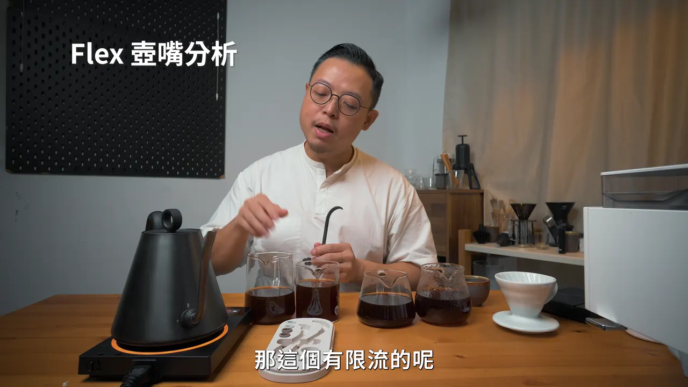
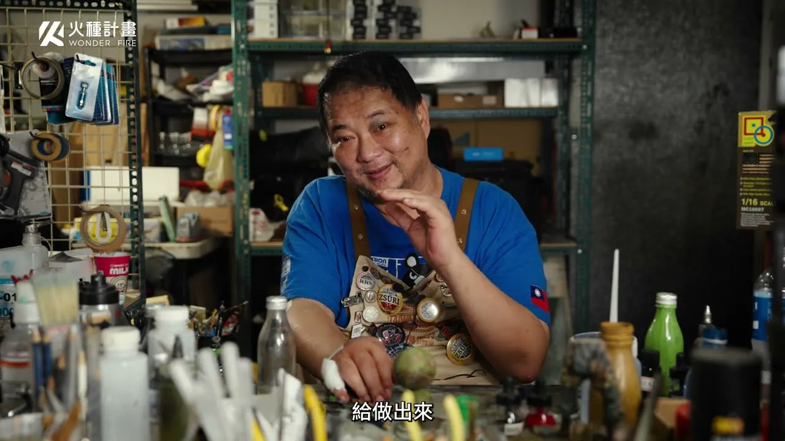
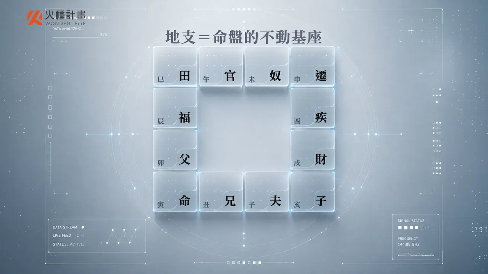

嗨，我是謝岱霖。Hi, I’m Ray Hsieh.
住在台北，做了十年品牌行銷與影像：企劃行銷素材、經營品牌頻道，也自己拍、自己剪。最近用 AI 工具，把一支片快速變成好幾個版本。I’m based in Taipei and have spent ten years in brand marketing and video: planning marketing content, growing brand channels, and shooting and editing it myself. Lately I use AI tools to turn one film into several versions, fast.
為什麼找我Why work with me

懂生意Business first
剪片前，先問這支片要替生意做什麼Before cutting, I ask what the film has to do for the business
在 VVcafe 當了五年品牌經理，把 YouTube 頻道從零做到 10 萬+ 訂閱，也做過全台第一堂正式手沖咖啡線上課程。Five years as VVcafe’s brand manager: I grew its YouTube channel from zero to over 100k subscribers and made Taiwan’s first full pour-over coffee course online.

一手包辦End to end
從企劃做到成片From the plan to the final cut
企劃、腳本、拍攝、剪輯、調色、字卡與字幕都自己來，溝通少一層，修改也快。Planning, scripts, shooting, editing, colour, cards and captions, all by me: one less layer of hand-offs, and faster changes.

課程經驗Courses
做過 11 門線上課程Eleven online courses
替火種計畫、PressPlay 製作課程影片，包括世界冠軍的拉花、披薩與模型課。Course films for Wonder Fire and PressPlay, including courses by world champions in latte art, pizza and model-making.

AI 流程AI workflow
用 AI 把產能放大AI to multiply the output
在商明國際從零建立 AI 短影音製作流程，一支短片能快速做出多個版本測試。At Biz Civilization I built an AI short-video workflow from scratch: one short becomes several versions to test, fast.
做出來的成果Results
- VVcafe YouTube 訂閱VVcafe YouTube subscribers
- 10萬+100k+
- 手沖咖啡學課程營收Pour-over course revenue
- NT$200萬+NT$2M+
- 商品影片帶動電商流量Marketplace traffic from product videos
- +15%+15%
- 展覽活動帶動 FB 粉絲Facebook followers from an exhibition
- +22%+22%
- 參與製作的線上課程Online courses made
- 11門11
經歷Experience
- 2025/05 – 至今2025/05 – now商明國際Biz Civilization建立 AI 短影音製作流程Building an AI short-video workflow
- 2023/09 – 2025/042023/09 – 2025/04自由接案Freelance影像製作Video production
- 2018/04 – 2023/092018/04 – 2023/09VVcafe（威威國際貿易）VVcafe品牌經理、行銷企劃Brand manager, marketing
- 2016/07 – 2018/042016/07 – 2018/04HIROIA（新加坡商喜羅亞）HIROIA行銷業務Marketing and sales
- 2014/11 – 2016/072014/11 – 2016/07NEXONANT（優酷科技）NEXONANT專案經理Project manager
學歷Education
長庚大學 工業設計學系Chang Gung University, Industrial Design
語言Languages
中文母語、多益 925、JLPT N3Mandarin (native), TOEIC 925, JLPT N3
工具Tools
- Premiere Pro
- Photoshop
- Illustrator
- Lightroom
- Remotion
- Claude Code
- Whisper
- ffmpeg
- Higgsfield
- Seedance